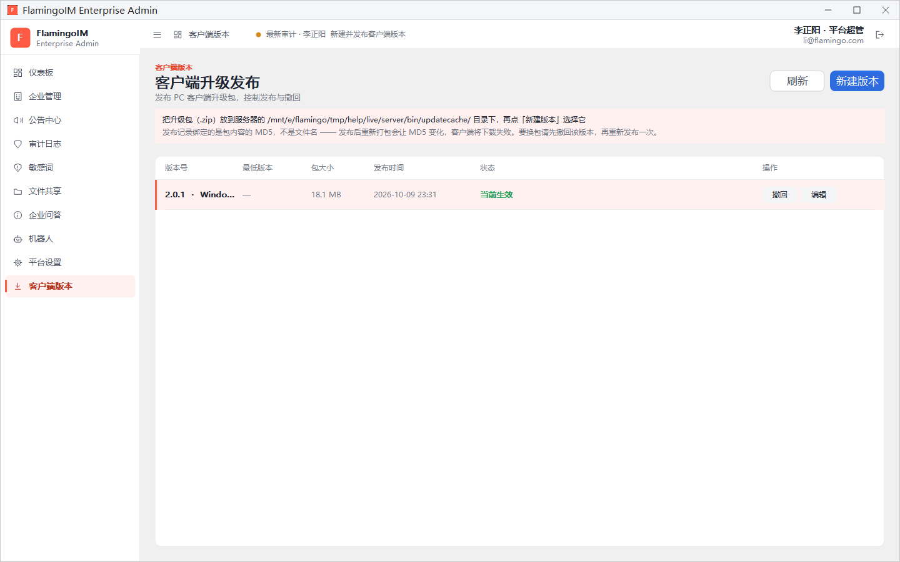
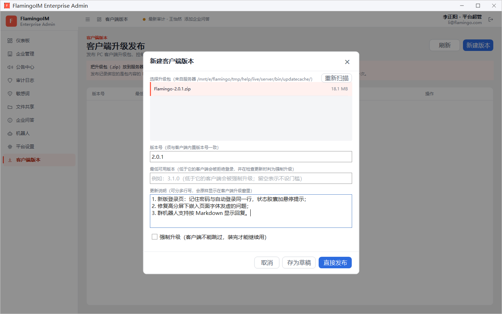
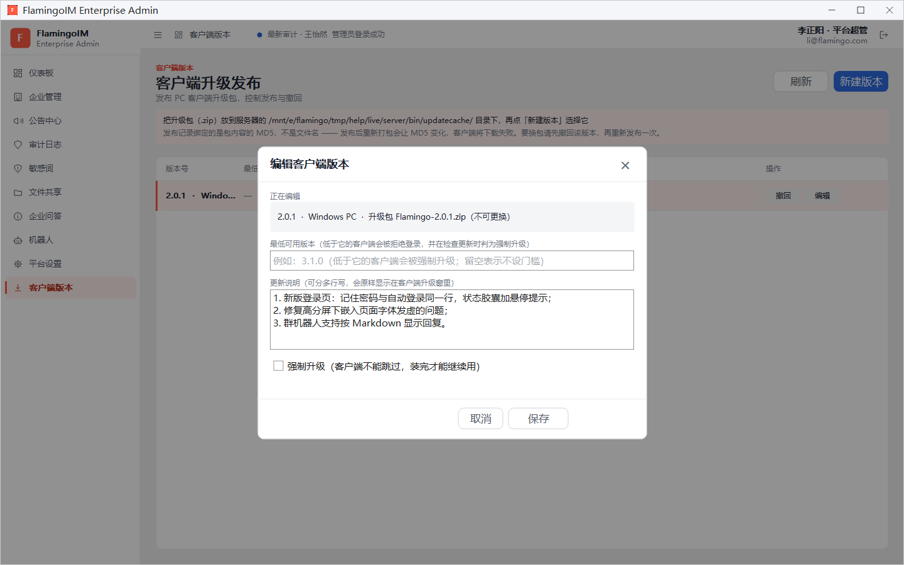

客户端版本与自动升级
PC 客户端的新版本由平台超级管理员在管理控制台发布。发布后，员工的客户端会在登录前后或手动检查时弹出升级提醒，一键完成更新。本章介绍升级包的制作要求、新建与发布版本、撤回与更换升级包，以及员工看到的升级提醒。
- 适用：平台超级管理员
- 位置：左侧导航「客户端版本」
- 需要：能把文件放到服务器升级包目录的权限（一般由运维人员操作）
发布流程概览
- 按下一节的要求，把新版本客户端打成一个
.zip升级包。 - 把升级包放到服务器的升级包目录里。文件名可以随意起，例如
Flamingo-2.0.1.zip，不需要改名，也不需要自己计算 MD5。 - 在管理控制台的「客户端版本」页点 新建版本，选中这个升级包，填写版本号等信息。
- 先存为草稿核对，或者直接发布。
- 员工的客户端检查更新时收到升级提醒。
制作升级包
升级程序只会覆盖或新增包里有的文件，包里没有的文件原样保留，从不删除。因此制作升级包时请注意以下几点（完整规则见仓库文档 docs/客户端自动更新方案.md 第 7.1 节）：
- 每次都要放进包里的：安装目录下的全部
.exe与.dll，即Flamingo.exe、FlamingoUpdater.exe和全部Flamingo*.dll插件，不能只放改过的那几个；以及Face/、Image/、Sound/三个资源目录。只更新主程序而沿用旧插件时，对应功能会因版本不符而无法加载，入口直接隐藏且没有任何提示。 - 可以不放的：字幕模型
FlamingoCaptionModel.dll没有变化时可以不放，用户电脑上原有的那份照常可用，这样升级包能小很多。 - 绝对不能放的：
config/目录（里面有服务器地址和用户自己改过的设置，放进去会把它们全部改回包里的那一份），以及Users/、Logs/等运行期数据。 - 使用 Release x64 版本的程序制作，升级包不能超过 500 MB。
版本列表
点左侧导航的 客户端版本，进入「客户端升级发布」页面：

页面上方的提示条写明了服务器升级包目录的位置。截图中的 /mnt/e/flamingo/tmp/help/live/server/bin/updatecache/ 是演示环境的目录，正式环境以实际部署为准。
列表各列依次是 版本号（附平台，如 Windows PC）、最低版本、包大小、发布时间、状态 和 操作：
| 状态 | 含义 | 可用操作 |
|---|---|---|
| 草稿 | 已创建但未发布，客户端收不到 | 发布、编辑 |
| 当前生效 | 已发布的版本中发布时间最新的一个，客户端检查更新时拿到的就是它 | 撤回、编辑 |
| 已发布 | 已发布，但不是发布时间最新的那一个 | 撤回、编辑 |
点 发布 时确认框会提示：发布后，低于它的客户端检查更新时都会收到升级提示（设为强制升级时还要求必须升级后才能继续使用）。
新建版本
点右上角的 新建版本，打开「新建客户端版本」对话框：

- 在 选择升级包 列表中点选升级包。列表列出服务器升级包目录里的文件；刚放进去的文件没有出现时，点右上角的 重新扫描。标着「不是 zip」的文件不能使用，标着「已建过版本」的表示已经有版本记录用过这个包。
- 填写 版本号：2~4 段用点分隔的数字，例如
2.0.1，必须与这个升级包里客户端内置的版本号一致，否则员工升级完之后仍会提示有新版本。 - 按需填写 最低可用版本：低于它的客户端会被拒绝登录，并在检查更新时判为强制升级；留空表示不设门槛。
- 填写 更新说明：可以分多行写，会原样显示在客户端的升级窗里。
- 需要所有人必须升级时，勾选 强制升级（客户端不能跳过，装完才能继续用）。
- 点 存为草稿 先保存、核对无误后再发布；或者点 直接发布。
编辑、撤回与更换升级包
点某个版本的 编辑，打开「编辑客户端版本」对话框：

编辑时只能修改 最低可用版本、更新说明 和 强制升级，改好后点 保存。版本号和升级包不能修改。
点某个已发布版本的 撤回 并确认后，客户端不再收到它的升级提示，检查更新时改为提示此前发布的最新版本；一个已发布的版本都不剩时，客户端不会收到升级提示。
员工看到的升级提醒

版本发布后，员工的客户端会在登录前、登录后，或在「关于」页点检查更新时弹出升级提醒。窗口里显示新版本号、当前版本 → 最新版本、升级包大小，以及你填写的更新说明。
员工点 立即更新 下载并安装新版本，点 稍后 暂不更新。版本设为强制升级、或员工的版本低于最低可用版本时，不能跳过，必须更新后才能继续使用。
员工一侧的详细说明见客户端「关于与自动升级」。